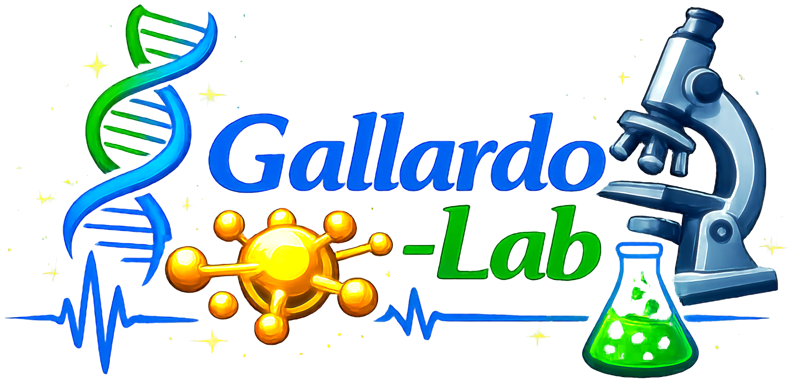

Open, browser-based tools for learning cancer biology, molecular biology, and nanomedicine.
City-building metaphor for learning cell biology — organelles, signaling, and cancer mechanisms.
Citopolis Hub
Main entry point — navigate all Citopolis modules from here.
Citopolis Main
Core cell biology — organelles, membrane, and cellular functions as a city.
Citopolis: Immunology
Immune system mechanisms in the cell city framework.
Citopolis: p53 & Cancer
p53 tumor suppressor pathway — mutations, loss of function, and cancer progression.
Citopolis: PARP
PARP signaling and DNA damage repair in the context of cancer therapy.
Step-by-step interactive visualizations of core molecular biology processes.
Molecular Structure
Atoms, bonds, and the structure of biological macromolecules.
Mutations
Types of DNA mutations and their consequences at the molecular level.
DNA Replication
Semi-conservative replication — enzymes, forks, and fidelity mechanisms.
Transcription
DNA → RNA: promoters, RNA polymerase, and mRNA processing.
Translation
RNA → Protein: ribosomes, codons, and protein synthesis.
Gamified laboratory experience for biomedical sciences students.
BioLab (ES)
Interactive laboratory simulations — techniques, protocols, and results interpretation.
BioLab (EN)
Interactive laboratory simulations — techniques, protocols, and results interpretation.
Flashcards — Biochemistry Lab 2026
80 study flashcards for the Molecular Biology lab practicals (P11–P14): DNA extraction, PCR, electrophoresis, and bioinformatics. Reveal answer + extended explanation per card.
Quiz P11–P14 · Multiple Choice
10-question graded quiz covering P11 (DNA extraction), P12 (PCR), P13 (electrophoresis) and P14 (bioinformatics). Downloadable certificate upon completion.
Competition · Nanotheranostic NPs
Sequential activity: 30 mandatory flashcards → 10-question graded exam (3 attempts, 70 pts to pass) → downloadable certificate. Biochemistry Dept., School of Medicine, UANL.
Flashcards · Nanotheranostics Functionalization
30 flip cards on AuNP/polymer surface chemistry, HER2 aptamers, c-Myc/Max peptides, nucleic acid payloads and translational gaps. Graduate level.
Competition · The NP That Didn't Arrive
Sequential activity: 24 mandatory flashcards → 10-question graded exam (3 attempts, 70 pts to pass) → downloadable certificate. Case study on AuNP design failure, redesign and cognitive biases. Biochemistry Dept., School of Medicine, UANL.
Flashcards · The NP That Didn't Arrive
24 flip cards on the AuNP case study: G-quadruplex failure, buffer redesign, in vitro validation, cognitive biases and epistemology in experimental nanomedicine. Graduate level.
Quiz HBB · Pre-lab P14
10-question pre-practice quiz on the HBB gene, sickle cell anemia (c.20A>T, p.Glu6Val), MstII RFLP and OMIM #603903.
Pipeline HBB · Bioinformatics P14
8-step interactive pipeline guide: BLASTn → Bl2seq → ORF Finder → OMIM → Clinical summary → PubMed → Restriction Map → Restriction Digest.
Mission-based exploration of nanomedicine concepts and targeted drug delivery.
Individual interactive tools and classroom activities.
DNA Double Helix
Interactive 3D-style visualization of the DNA double helix structure.
StriderWeb — Sequence analysis
DNA Strider-style toolkit: translation, ORFs, restriction map, digestion & virtual gel, dot plot, codon usage.
PrimerDesigner — PCR primers
Design PCR primers with nearest-neighbor Tm, in-silico PCR, Sanger readability and a local primer database.
PrimerDesigner Expert — Sanger sequencing
Expert version for Sanger: independent forward and reverse search regions, quality filter, self-end dimer, 3' stability, Rychlik optimal Ta and per-primer BLAST links.
Group Competition
Competitive quiz platform designed for classroom team activities.
Mission Map
Visual navigation map linking all educational missions and modules.
Gold & Trojan Horse
Drug delivery metaphor — gold nanoparticles and the Trojan horse concept in targeted therapy.
These tools are developed and maintained by Hugo L. Gallardo-Blanco and Celia N. Sánchez-Domínguez at the School of Medicine & University Hospital "Dr. José Eleuterio González", Universidad Autónoma de Nuevo León (UANL), México.
All tools are free to use for non-commercial educational purposes. For questions, collaborations, or to report issues, contact us via GitHub Issues or email hugo.gallardobl@uanl.edu.mx.